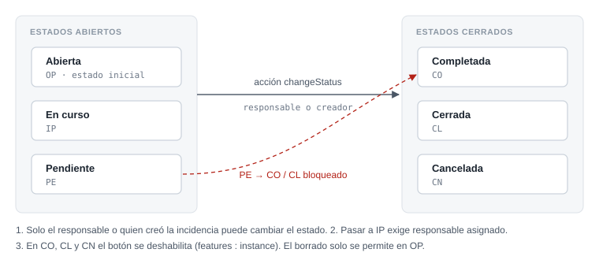

Caso de estudio · ABAP Cloud
Gestión de Incidencias con RAP
Aplicación Fiori para registrar incidencias, asignarlas a un responsable y seguir su historial de estados. Proyecto final del Máster SAP ABAP Cloud de Avanzado a Experto, desarrollado en SAP BTP ABAP Environment y versionado con abapGit.
El problema
Un equipo de soporte necesita una herramienta sencilla dentro de SAP para dar de alta incidencias, repartirlas y saber en todo momento en qué estado están y quién las ha movido. Las reglas que pedía el enunciado:
- Cada incidencia tiene título, descripción, prioridad, fechas y responsable.
- Al crearla, el número y el estado inicial se asignan solos.
- El estado cambia mediante una acción, con un comentario, y cada cambio queda en un historial.
- Solo el responsable o quien la creó puede cambiar el estado.
- Una incidencia pendiente no puede cerrarse directamente.
- Solo se pueden borrar incidencias abiertas.
Ficha técnica
- Plataforma
- SAP BTP ABAP Environment (ABAP Cloud)
- Paquete
ZABAP_INCT_AGG- Modelo
- RAP gestionado,
strict ( 2 ), draft, numeración UUID gestionada - Entidades
- Incidencia (raíz) e Historial (hija, por composición)
- Servicio
- OData V4 UI, app Fiori Elements List Report + Object Page
- Objetos
- 4 tablas + 2 draft, 2 dominios, 7 vistas CDS, 2 BDEF, 4 clases, metadata extensions, service definition y binding

Estados y reglas de transición
El estado nunca se edita a mano: el campo es de solo lectura y solo cambia a través de la acción changeStatus, que valida las reglas y escribe el historial.

Decisiones técnicas
1. Definición de comportamiento: qué hace el framework y qué hago yo
Con RAP gestionado, el framework se encarga de crear, actualizar, borrar, bloquear y guardar. Mi código solo implementa lo que es lógica de negocio. La BDEF declara qué campos son de solo lectura, qué validaciones se lanzan y cuándo.
managed implementation in class zbp_r_dt_inct_agg unique;
strict ( 2 );
with draft;
define behavior for zr_dt_inct_agg alias Incident
persistent table zdt_inct_agg
draft table zdt_d_inct_agg
lock master
total etag LastChangedAt
etag master LocalLastChangedAt
authorization master ( global, instance )
{
create;
update;
delete;
association _History { create ( features : instance ); with draft; }
field ( readonly ) IncUUID, IncidentID, Status, ChangedDate,
LocalCreatedBy, LocalCreatedAt, LocalLastChangedBy,
LocalLastChangedAt, LastChangedAt;
field ( numbering : managed ) IncUUID;
field ( mandatory ) Title, Description, Priority;
action ( features : instance ) changeStatus
parameter zdd_change_status_param_agg result [1] $self;
side effects { action changeStatus affects $self; }
internal action setHistory;
determination setDefaultHistory on save { create; }
determination setDefaultValues on modify { create; }
validation validateMandatoryFields on save { create; update; }
validation validateDates on save { field CreationDate, ChangedDate; }
validation validateDeleteStatus on save { delete; }
...
}Extracto sin comentarios; las acciones de draft, el mapping y la entidad de historial están en el repositorio.
2. Botón deshabilitado en lugar de mensaje de error
Si una incidencia está cerrada, no tiene sentido dejar pulsar "Cambiar estado" para luego mostrar un error. Con features : instance el botón aparece deshabilitado. El caso delicado es el de una incidencia nueva que todavía es solo un borrador: no existe en la tabla activa y tampoco debe poder cambiar de estado. Para distinguirla, se comprueba si el UUID del borrador ya tiene registro activo:
result = VALUE #( FOR incident IN incidents
LET is_closed = xsdbool( incident-Status = 'CO'
OR incident-Status = 'CL'
OR incident-Status = 'CN' )
is_new = xsdbool( incident-%is_draft = if_abap_behv=>mk-on
AND NOT line_exists( lt_active[ inc_uuid = incident-IncUUID ] ) )
IN
( %tky = incident-%tky
%action-changeStatus = COND #( WHEN is_closed = abap_true OR is_new = abap_true
THEN if_abap_behv=>fc-o-disabled
ELSE if_abap_behv=>fc-o-enabled ) ) ).3. La acción changeStatus: validar, actualizar y dejar rastro
La acción recibe el nuevo estado y un comentario a través de una entidad abstracta. Para cada incidencia aplica las tres reglas de negocio; si alguna falla, la incidencia va a FAILED, el mensaje a REPORTED y se pasa a la siguiente. Si todo es correcto, actualiza el estado con EML y crea la línea de historial por la composición:
" Regla de negocio: de Pendiente no se pasa directamente a Completada o Cerrada
IF incident-Status = 'PE'
AND ( key_entry-%param-Status = 'CO' OR key_entry-%param-Status = 'CL' ).
APPEND VALUE #( %tky = incident-%tky ) TO failed-incident.
APPEND VALUE #( %tky = incident-%tky
%state_area = 'VALIDATE_STATUS_CHANGE'
%msg = new_message_with_text(
severity = if_abap_behv_message=>severity-error
text = 'Cannot change status from Pending to Completed or Closed' ) )
TO reported-incident.
CONTINUE.
ENDIF.
MODIFY ENTITIES OF zr_dt_inct_agg IN LOCAL MODE
ENTITY Incident
CREATE BY \_History
FIELDS ( HisID PreviousStatus NewStatus Text )
WITH VALUE #( ( %tky = incident-%tky
%target = VALUE #( ( %cid = |HIST_CS_{ incident-IncUUID }|
HisID = next_his_id
PreviousStatus = incident-Status
NewStatus = key_entry-%param-Status
Text = key_entry-%param-Text ) ) ) ).4. Validaciones que señalan el campo
Las validaciones de campos obligatorios rellenan %element además del mensaje, así que Fiori marca en rojo el campo concreto. Cada validación usa su propio %state_area para que los mensajes desaparezcan cuando el usuario corrige el dato.
5. Valores por defecto al crear
La determinación setDefaultValues asigna el número correlativo, el estado OP y las fechas con cl_abap_context_info=>get_system_date( ) (en ABAP Cloud no se usa sy-datum). Al guardar por primera vez, setDefaultHistory crea la primera línea del historial.
MAX + 1, válido para el ejercicio pero con riesgo de duplicados si dos usuarios crean a la vez. En productivo usaría un objeto de rango de números (cl_numberrange_runtime) en early numbering. También movería los textos de los mensajes a una clase de mensajes para poder traducirlos, y añadiría tests de EML con cl_botd_txbufdbl_bo_test_env.
6. Interfaz sin escribir interfaz
La app Fiori no tiene ni una línea de JavaScript. Las metadata extensions definen columnas, filtros, facetas del detalle y los botones de acción (#FOR_ACTION con dataAction: 'changeStatus'), y los value helps de estado y prioridad usan búsqueda difusa con umbral 0.8.
Lo que aprendí
- En RAP, la mayor parte del trabajo está en decidir bien qué va en la BDEF y qué en el código. Una BDEF bien pensada ahorra métodos enteros.
- Los borradores (draft) cambian cómo hay que razonar: cada lectura puede devolver una instancia activa o un borrador, y hay que contemplar ambos casos.
- abapGit desde el primer día: el historial de commits es también la documentación de cómo se construyó.
¿Quieres montar algo parecido? El generador de BO RAP te deja el esqueleto listo con draft, validaciones y una acción con parámetro, y la plantilla RAP se descarga gratis.